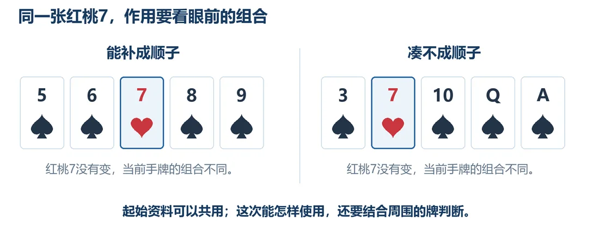
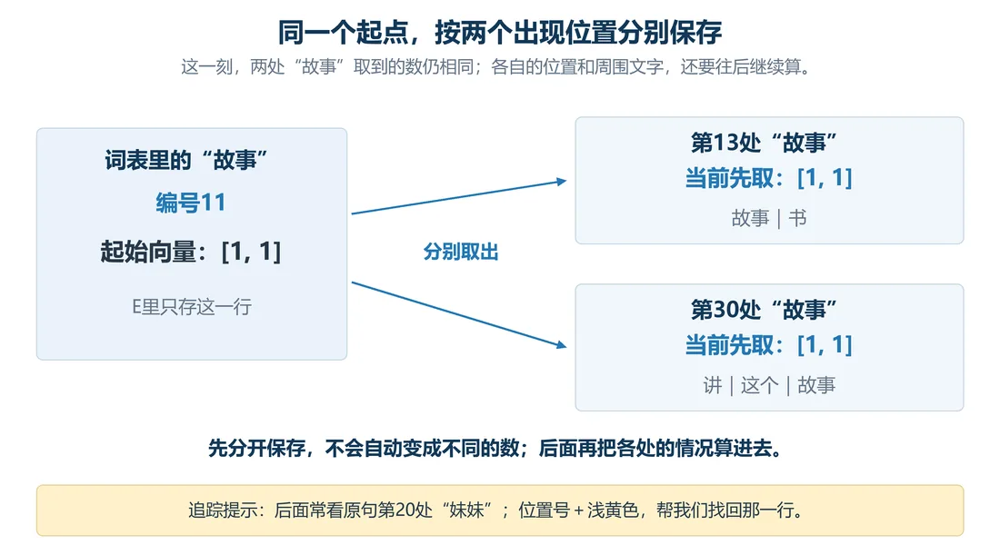

我们在这儿
上一篇我们把例句拆成 31 个 Token，去重后词表有 27 个，也各自有了编号。现在电脑能按编号找到它们，可这些编号说明不了 Token 之间的其他联系。这一篇，我们试着给每个 Token 配一组数字，电脑以后可以拿这些数字来算。
这一篇要解决给每个 Token 配一组能计算的起始向量，并按原句位置存好。
大概阅读约 7–9 分钟
“小明”的编号是 2，“妹妹”是 17。17 比 2 大，可这没有任何意义：
编号就像身份证号，拿它们相减，算不出两个人的年龄差。
再看两处“故事”。同一个 Token，编号都是 11，可一处在“故事｜书”里，另一处在“讲｜这个｜故事”里。编号能告诉电脑“两处都是故事”，但这两个位置、周围文字带来的区别，它说明不了。
我们既想让这两个“故事”共用一个起点，又想让它们各自遇到的区别也能参与计算。怎么办？
联想一下每个人的档案：
照这个思路，编号负责查找，再准备一组数字，让同一个 Token 不同方面的联系可以拿来算。
先从两个数试起，比如“妹妹”暂用 [1, 2]。
为什么是 1 和 2？我们只是先试试，用好算的数把存取和计算的办法弄清楚。
换一组也行。合不合用，得放进后面的计算看结果才知道。
这样按顺序排好的一组数，数学上叫向量。
向量就是按顺序排好的一组数，用方括号括起来。里面每一个数叫一个分量，也常说“一格”；有几个数，就叫几维向量。
[1, 2] 是一个二维向量：第 1 格是 1，第 2 格是 2。
顺序很要紧，[1, 2] 和 [2, 1] 是两个不同的向量，不能混。
也可以把它想成从原点出发的一个箭头：第 1 格决定横着走多少，第 2 格决定竖着走多少。
档案只是帮我们跨过这一步的类比。
我们给词表每个 Token 准备一组共用的出发数字，叫起始向量，按编号存好。
这次先这样安排：
词表有 27 个 Token，每个向量两格。整张数字表就是 27 行、2 列，这样的数字表叫矩阵。
完整的起始向量表记作 E，也叫嵌入矩阵。
电脑要用“妹妹”时，先找它的编号 17，再到表里取出对应那一行 [1, 2]。
我们用 d 表示每个向量有几格，这里 d＝2。
这种把 Token 用向量表示、放进能计算的数字空间的办法，叫嵌入（Embedding）。
把一组向量一行一行对齐排好，就是矩阵。横着数叫行，竖着数叫列，所以说一个矩阵“几行几列”。数学上用一个大写字母代表整张矩阵，比如这张起始向量表记作 E。
这里只画 3 行示意，实际嵌入矩阵 E 有 27 行、2 列。括号里每个数叫矩阵的元素，用“大写字母加两个下标”定位：Eij 表示第 i 行、第 j 列那个数。比如 E12 就是第 1 行第 2 列，这里等于 0。
27 行、2 列的意思：一共 27 个向量，每个向量两格。
后面会反复看到“n 行 d 列”，就是 n 个位置、每个位置的向量有 d 格。
注意，两处“故事”到现在共用一个起始向量 [1, 1]。想想同一张红桃 7：跟 5、6、8、9 放一起能组成顺子，换成 3、10、Q、A 就凑不成。牌还是那张，能不能成顺子，得看跟谁搭。两处“故事”也一样：出发时共用一个起点，含义相同，但接下来左邻右舍变化了，含义也就大相径庭了。

具体做法是：
两处“故事”都查编号 11、取到 [1, 1]，分别存在第 13 行、第 30 行。
注意，分开存不会自动让数字不同。此刻两处仍是 [1, 1]，我们只是先分开存好，后面才好各算各的。

怎么用对应词表一个 Token，出现几次都查这一行
多少行27 行
怎么用对应句中一个位置，先存起始向量，后面各算各的
多少行31 行
后面用 n 表示句中有多少个位置。对这句，n＝31。
这一篇收个尾
这一篇拿到：每个 Token 的起始向量，以及按 31 个位置存好的矩阵。
下一篇接着看：把位置信息加进数字。